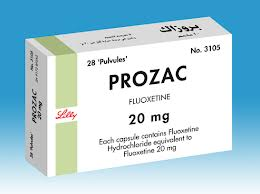
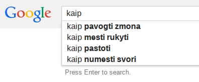
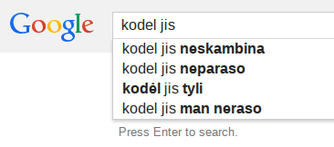
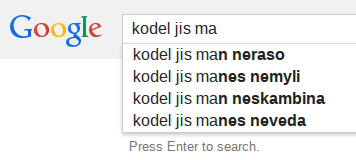
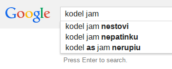
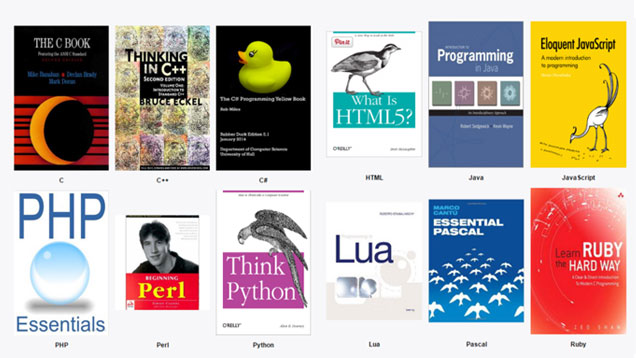

The path of software engineer

My background
Gediminas Morkevičius aka @l3pp4rd

About 10 year experience in software development
A little about my carrier


Author of some open source projects


Programming languages
- PHP, Javascript - 5 years
- C, C++ - 3 years
- Java - 2 years
- GO - 2 years
- Albert Einstein
“Genius is 1% talent and 99% percent hard work...”
“The only source of knowledge is experience.”
“The more I learn, the more I realize how much I don't know.”
The following is true no matter how special you are..

Do not overestimate yourself
There are a lot of trending technologies, but they do not invent nothing new
stop chasing the trends and learn fundamentals
- Networking - TCP/IP
- HTTP protocol and server
- IO - request / response life cycle. How it works in the web browser.
- Procedural and functional programming
- MVC design pattern
- Linux and Unix
Take small incremental steps in everything you do.
don't end up consuming..
Not all suggestions may apply to you.
   Which programming language to learn
The safe bet..
- PHP - still 90% of the web applications, easy to learn and start.
- Java - most enterprise applications. Better salaries, but may be boring.
- HTML,CSS,Javascript - web is all over the place this decade.
If you love what you do and work hard enough..
Most probably, you can run for your goals whatever they are.
90% of startups fail, be aware of that.
I have worked on two startups, both of them failed
What traits I think are important?
- Think outside the box.
- Contribute to open source.
- Work with smarter than you - people.
- Follow smart people, not trendy rockstars.
- Stream for the best quality.
- Take risks, invest spare time.
- Love what you do.
Accepting failures in life
The more mistakes you make the better you get.
Everything in life is just an experiment.
Failure - is a step towards success.
Thank you

Slides are available at: slides.gediminasm.org
Powered by: Revealjs